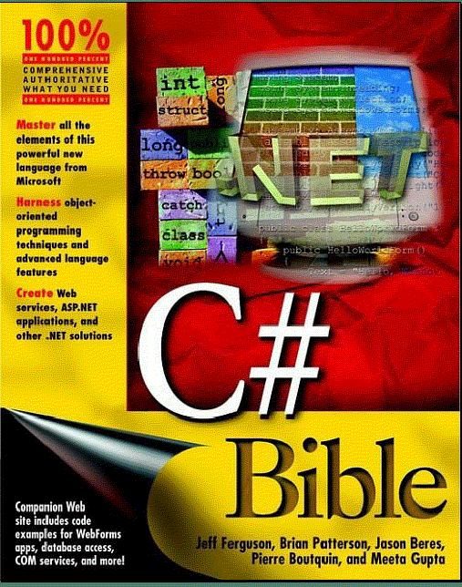

Livro: C# Bible.
Autores: Jeff Ferguson, Brian Patterson, Jason Beres, Pierre Boutquin e
Meeta Gupta
Material do curso: Microsoft Training & Certification -
Introduction to C# Programming with Microsoft .NET
link: http://www.microsoft.com/traincert/syllabi/2609Afinal.asp
Site: Microsoft MSDN Library
link: http://msdn.microsoft.com/library
Sites: Mono e Mono Community
link: http://www.go-mono.com - http://www.gotmono.com
Materiais que estão disponíveis na página: Recursos de outros autores.